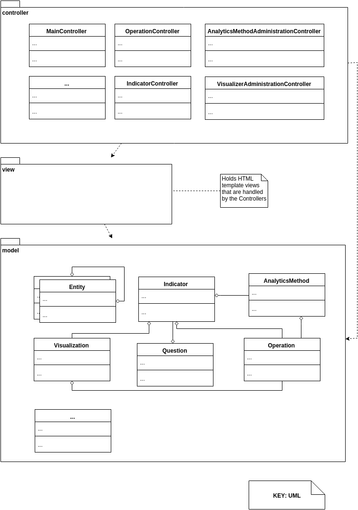
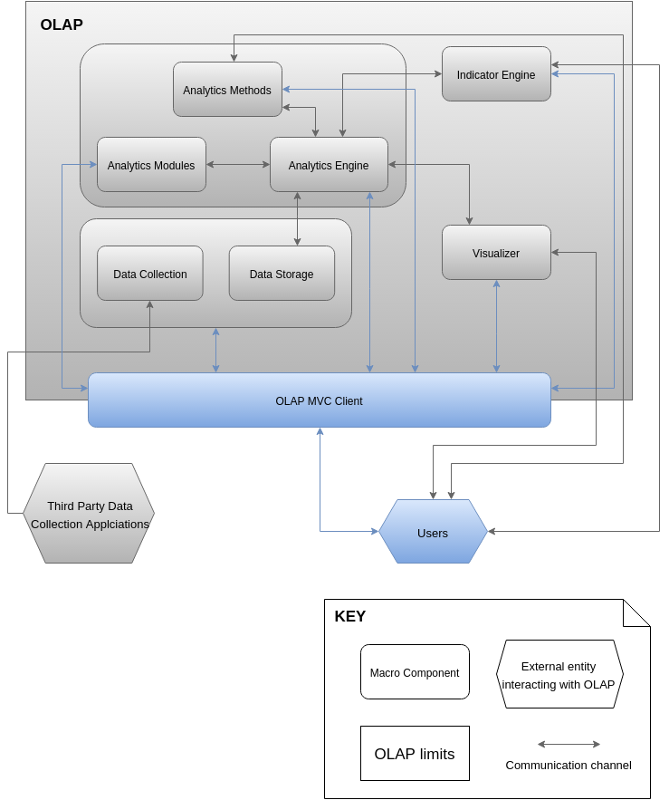

WEB CLIENT: MODULE VIEWS
Primary Presentation

Element Catalog
Package: controller
This main package will hold the interaction points with the REST APIs of the OpenLAP system. The main entry points should communicate with the Indicator Engine, the Analytics Methods and the Visualizer in order to obtain the elements to manage Indicators, Analytic Modules and Visualizations as well as using the Visualizations and Analytics Methods when instantiating Indicators. The entry points are described on each of the macro components views in this architecture document.
- MainController: This controller handle the basic and main operations of the client.
- IndicatorController: This controller handles operations with the Indicators, present on the Indicator Engine macro component trough it's own controller endpoints. The Client interfaces directly with the endpoints of the Indicator Engine that handle the management (creation, viewing, modifying, updating, instantiating, etc.) of the Indicators in the Indicator Engine. This controller then relies the information with the models on the
model package and presents it on the HTML pages that are contained in the view package of this macro component. Modifications on the model referring to Indicator Operations that need to be saved are pushed back to the Indicator Engine (the back-end) through this controller, which again access the Indicator Engine through the endpoints defined by the Indicator Engine macro component controllers.
- IndicatorOperationController: This controller handles operations with the Indicator Operations, present on the Indicator Engine macro component trough it's own controller endpoints. The Client interfaces directly with the endpoints of the Indicator Engine that handle the management (creation, viewing, modifying, updating, deleting, etc.) of the Indicator Operations during the creation of the Indicators in the Indicator Engine. This controller then relies the information with the models on the
model package and presents it on the HTML pages that are contained in the view package of this macro component. Modifications on the model referring to Indicator Operations that need to be saved are pushed back to the Indicator Engine (the back-end) through this controller, which again access the Indicator Engine through the endpoints defined by the Indicator Engine macro component controllers.
- AnalyticsMethodAdministrationController: Similar to the previous controllers, this controller is responsible on mediating with the Analytics Methods macro component, which acts as a back-end. Whenever Analytics Methods are involved in the instantiation of indicators, creating or executing Triads, modifying or deleting Analytics Methods (as well as creating security operations over them) this controller mediates with the respective macro component. The
model package will hold any data required to be shown in the respective view and update it to the back-end when necessary.
- VisualizerAdministrationController: This controller allows the client to communicate with the endpoints established on the Visualizer macro component. Whenever visualizations are involved in the process of creating or executing Triads, or when uploading new visualizations and/or performing modification operations or deletion of the visualizations, this controller will permit the user to use the client to do so by mediating with the respective endpoints of the Visualizer macro component.
- Other Controllers: Whenever the user requires operations that interact with other parts of the OpenLAP system, such as login, security, personalization, etc. then a controller must be established in the client to handle them. The additional controllers will also ideally communicate to the other OpenLAP macro components through endpoints to be consistent on the overall RESTful API oriented architecture of the system.
Package: view
This package does not hold classes but HTML views or templates that are to be used by the controller. The models in the mode package represent the data that the view holds.
Package: model
This package holds the models required for the controller to operate. Note the models here are not necessary the same models as the other macro components. The model here are used to hold all the data required for the client to properly show the information required by and from the user. This can mean that the models can hold less or more data depending on the concrete implementation of the controllers and views and could contain more models, split information of the other macro components (the back-end) into different models, extend it for interaction purposes or simply not use all of it.
- Indicator: This model holds the data required by the controller to mediate with the back-end macro component and to be displayed in the views related to Indicators (creation and instantiation of Indicators).
- IndicatorOperation: This model holds the data required by the controller to mediate with the back-end macro component and to be displayed in the views related to Indicator Operations (creation and instantiation of Indicators).
- Question: This model holds the data required by the controller to mediate with the back-end macro component and to be displayed in the views related to Questions (creation and instantiation of Indicators).
- AnalyticsMethod: This model holds the data required by the controller to mediate with the back-end macro component and to be displayed in the views related to Analytics Methods (instantiation of Indicators, creation and modification of Analytics Methods).
- Visualization: This model holds the data required by the controller to mediate with the back-end macro component and to be displayed in the views related to Visualizations (instantiation of Indicators, creation and modification of Visualizations).
- Learning Context Data Model models: Whenever Learning Context Data Model entities are involved, there must exist a model to hold the pertinent data for those operations.
- Other models: Additional models are required to give support operations, create logging, handle users, security, metrics and session related data.
Context Diagram

Variability Guide
- This macro component is designed not to represent exact connection points but to illustrate the purpose of the client. New controllers, models and views are to be added where needed.
- Operations on the Indicators will most likely be related to different views. Once different Indicator Operations are created, abstract controller must be created to handle the main purposes and overwrite or modify on child classes that handle the specifics of each IndicatorOperation controller.
Rationale
Using best practices and architectural standards is one of the principles of this architecture. For designing decoupled clients, one of the most effective approaches is to use the Model View Controller pattern. This pattern assigns a controller the responsibilities to communicate with server side components, fetch data, send queries and forward the results to the model and the views. The views where are HTML pages tied to the model, that hold the data fetched and transformed by the controller with which the user can interact with. Whenever the model is changed, the view reflects it and, when needed, the controller performs new server queries trough the API to push changes to the OpenLAP system. This allows not only to support a decoupled design from the main client to the server side components, but also enables an easier extension of the client and makes possible creating other clients, in other platforms with different functionalities.
Ideally, the client should be implemented using and MVC framework that, if possible, is compatible with the technologies used in through the project. This allows to easily maintain the client, be easily extended for new functionalities, and handle easily security, logging, deployment, testing and other non functional requirements. Most MVC frameworks offer powerful template systems to embed code into HTML views. The power of using HTML views is that allows the client to be updated easily through CSS and Javascript. This simplifies the design and implementation of the client an allows creating Usability changes without modifying the client logic.
The main idea is to leverage on the RESTful APIs offered by the macro components of the OpenLAP system. This way, the client can directly communicate with the different pieces of the system ad centralize the interaction of the users in a clean, easy to maintain and extend, way.
The list of components, modules and classes here show are just representational for the purposes of mapping the main elements to the MVC pattern and the implementation should be responsible of determining which exact realizations of the components are needed. New ones can be introduced, aiming for usability and covering the Use Cases.
- Section 4.7.2.OpenLAP Web Client: C&C Views contains the Components and Connectors view description.
- Section 4.3 contains the Architecture of the Indicator Engine macro component and its RESTful API
- Section 4.4 contains the Architecture of the Visualizer macro component and its RESTful API
- Section 4.5 contains the Architecture of the Analytics Method macro component and its RESTful API